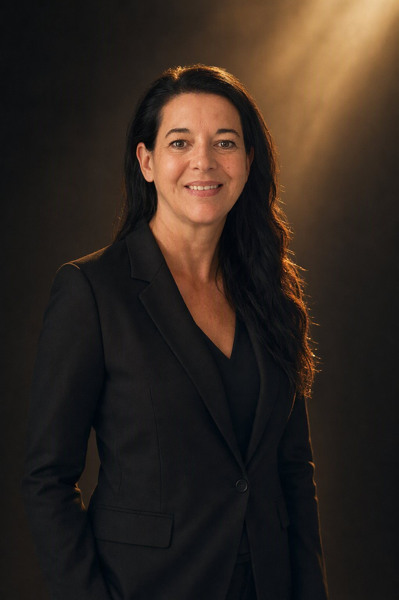

Recognition should follow substance.
In most fields the most visible voice is not the most qualified one. We exist to close that gap for people who have already done the work.

We build done-for-you authority platforms that place established experts at the center of a conversation they are qualified to lead.
A produced panel event is the flagship. Webinars, virtual summits, expert interview series, roundtables and podcast-style conversations are built the same way. Concept, experts, production and promotional assets are ours. The expertise is theirs. What we hand back is a produced event, a clean recording, and content cut from it that is still usable long after the room has closed.
The longer version of the ambition is a market where the most qualified voice in a field is also the most visible one. Visibility is not vanity. It is how the right people finally find the expertise they need.


Five words, and what each one costs us.
Every decision here, from a color to a run of show, has to earn at least one of them, and each one also rules something out. Sophisticated, so we never shout to be heard. Commanding, so we never hedge or over explain. Credible, so we never promise what we cannot produce. Empowering, so we never talk down to a client. Produced, so we never ship anything unfinished.

Founder & CEO
Annette Knecht Seier
Meet the founder & CEO
Hello, I’m Annette.
For years, I’ve worked as The Life Reset Coach through Transformation Unlimited, helping ambitious professionals break free from overwhelm and step into clarity, confidence, and control of their own lives. But along the way, I kept meeting brilliant coaches, consultants, and business owners who had all the expertise in the world and still weren’t being seen.
That’s why I created Own Your Stage Studio.
I believe your expertise deserves to be recognized. Not someday. Not after one more credential or one more year of preparation, now. I built my signature program, Own Your Stage, to show business owners exactly how one strategically designed, professionally produced panel event can build their authority platform, expand their visibility, and create real, lasting content in just eight weeks.
I’ve been featured in CEO Monthly, and I regularly speak alongside 100+ business and life experts at events like the Spotlight on Success Summit. But what I love most is helping other experts get their own moment in the spotlight.
What we are
A production studio, an authority platform, a professional network and a content engine. Panels, webinars, summits and series, each one built around one expert and turned into content. Own Your Stage Studio, LLC is a Florida limited liability company. Events are produced virtually, for clients anywhere.
What we are not
Not an event planning company: we do not run your calendar, we build the stage and position you at the middle of it. Not webinar software or a Zoom license: what you pay for is the strategy, the casting, the branding, the production and the content. Not a personal coaching brand, and not a theater production. The stage language is about visibility, not performance.